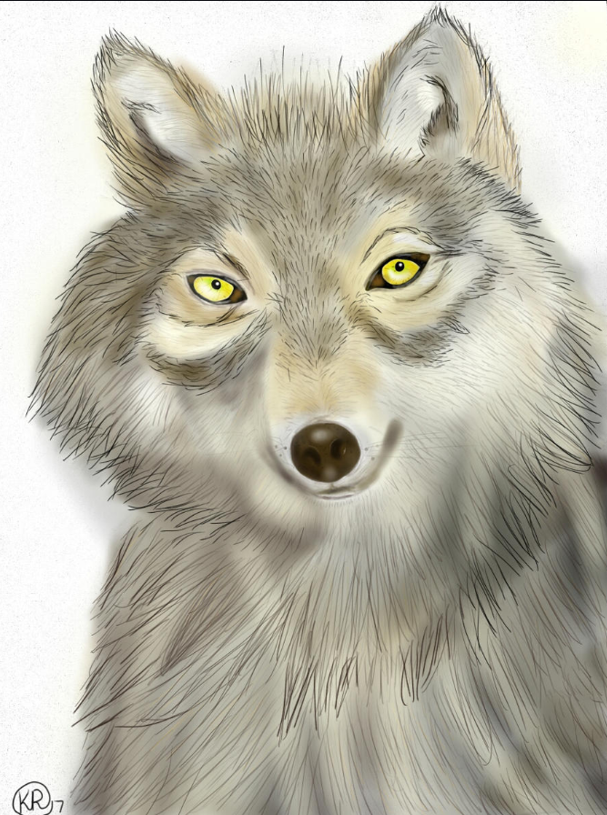
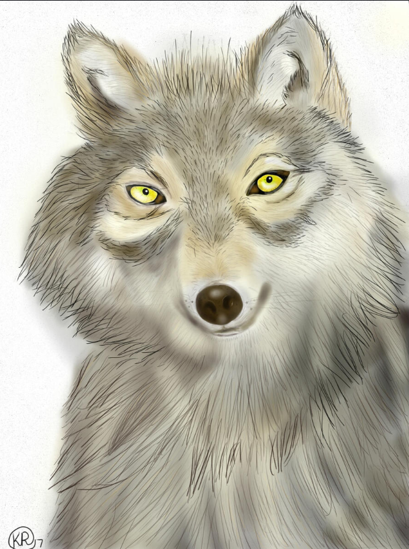
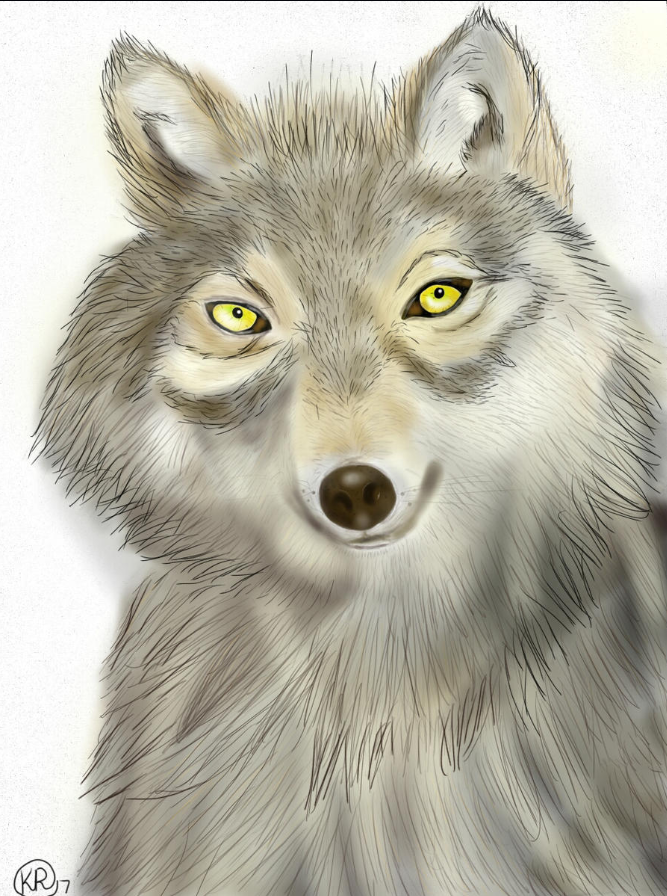

Welcome to my digital art and illustration portfolio! As a lifelong painter, I have always been passionate about expressing my creativity through visual art. My journey into digital art has allowed me to merge traditional techniques with modern tools, using Adobe Illustrator, Photoshop, and Krita to bring my visions to life. Each piece is a blend of my painting background and digital innovation, resulting in vibrant, dynamic artworks that capture the essence of my artistic journey. Explore my portfolio to see how I transform ideas into captivating digital masterpieces.
